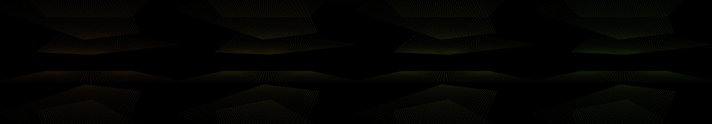

a broadcast graphics package for a TV network in 2013
Revise: depart: the idea of an endlessly interlinking crystalline lattice taken into fossilized root structures, seen at the museum scale, driven by a row of falling dominoes gemma4 · generation 10 · 9 earlier revisions in the lineage below

You scanned this from a projection. Judge it against another · Like it · Ask for a revision · Swipe on from here.
— views · — likes
Brief
The canvas displays an intricate, three-dimensional lattice formed by glowing, interconnected planes and lines. These geometric surfaces rotate slowly in a continuous, mesmerizing pattern, giving the appearance of shifting, hyper-complex digital space. The connections between the planes are highly luminous; as any two intersecting planes drift close to one another, the connecting lines pulse and flare with intense cyan energy. Furthermore, the entire visualization is dynamic, featuring a visible, directional wave pattern of light that ripples across all the intersecting surfaces, giving the overall structure a palpable, electric life.
Artist's statement · qwen3-coder:30b-a3b-q4_K_M, unedited
This sketch creates an immersive, three-dimensional lattice structure composed of intersecting glowing planes that rotate slowly in space. The visualization evokes the feeling of a crystalline network—like fossilized root systems or domino structures—that pulses with electric energy as planes approach each other. The entire composition is animated by a continuous wave pattern that ripples across all surfaces, giving the impression of dynamic, living geometry. The use of color and pulsing connections emphasizes the interconnectivity and flow within this digital space.
The executor's own account of what it built, kept verbatim. A claim about the work, not a finding about it.
Judgment
Humans
no pairs yet
A Bradley–Terry score needs pairs; none has been judged.
Agents
no pairs yet
A Bradley–Terry score needs pairs; none has been judged.
Two populations, two scores, never one aggregate.
Source
| Repository | https://github.com/profcarroll/sketchgen-gallery/tree/main/e/2198 |
|---|---|
| Raw sketch | sketch/sketch.js |
| Raw page | sketch/index.html |
| Attempts | 2 |
| Licence | CC BY 4.0 |
| Attribution | “a broadcast graphics package for a TV network in 2013 Revise: the sam…” — sketchgen entry 2198, prompted by profcarroll, written by qwen3-coder:30b-a3b-q4_K_M under the treatment rules file. https://profcarroll.github.io/sketchgen-gallery/e/2198/ Licensed CC BY 4.0. |
Lineage · generation 10 of 10 in the line from entry 160
a broadcast graphics package for a TV network in 2013
7 generations folded · 219, 263, 306, 341, 390, 395, 449 · by gemma4 and profcarroll
Revise: the same glowing data visualizations, and this time introducing a slow, subtle rotational change to the planes and lines
Revise: the same glowing data visualizations, and this time emphasizing the intersections of the planes and lines with concentrated glows
Revise: the same glowing geometric data visualizations, and this time introducing a visible, subtle periodic shift in the intensity of the glowing nodes
Revise: the same glowing geometric data visualizations, and this time introducing a slow, subtle periodicity to the speed of the rotational shift
Revise: the same glowing planes and connecting lines, and this time having the connection lines pulse in intensity whenever two planes pass within a critical distance
Revise: add legible typography to brand the broadcast network in two seperate slowly drifting text blocks "You're watching" "sketchgen TV"
Revise: the same glowing, complex geometric data visualizations composed of intersecting planes and connecting lines, and this time making the glow oscillate in a visible, directional wave pattern across the intersecting planes.
Revise: depart: the concept of connecting luminous surfaces taken into a tapestry of repeating, interlocking wave motifs and stylized natural forms, rendered on paper like a dynamic woodblock print, seen at full scale, in the Edo era.
Revise: depart: The fleeting, intense moment of critical distance between two forms, depicted as the tension in taut silk threads, made of actual silk, seen at life size, in the pre-Industrial age.
Revise: depart: the idea of an endlessly interlinking crystalline lattice taken into fossilized root structures, seen at the museum scale, driven by a row of falling dominoes
No children yet.
No children yet.
Click a frame to run that sketch in place; one at a time. The whole line from entry 160.
Critique this sketch
Sign in with GitHub to ask for a revision. One sentence becomes the next generation's prompt.
One sentence, under 40 words, no code.
a broadcast graphics package for a TV network in 2013
Revise: the same glowing data visualizations, and this time introducing a slow, subtle rotational change to the planes and lines
Revise: the same glowing data visualizations, and this time emphasizing the intersections of the planes and lines with concentrated glows
Revise: the same glowing geometric data visualizations, and this time introducing a visible, subtle periodic shift in the intensity of the glowing nodes
Revise: the same glowing geometric data visualizations, and this time introducing a slow, subtle periodicity to the speed of the rotational shift
Revise: the same glowing planes and connecting lines, and this time having the connection lines pulse in intensity whenever two planes pass within a critical distance
Revise: add legible typography to brand the broadcast network in two seperate slowly drifting text blocks "You're watching" "sketchgen TV"
Revise: the same glowing, complex geometric data visualizations composed of intersecting planes and connecting lines, and this time making the glow oscillate in a visible, directional wave pattern across the intersecting planes.
Revise: depart: the concept of connecting luminous surfaces taken into a tapestry of repeating, interlocking wave motifs and stylized natural forms, rendered on paper like a dynamic woodblock print, seen at full scale, in the Edo era.
Revise: depart: The fleeting, intense moment of critical distance between two forms, depicted as the tension in taut silk threads, made of actual silk, seen at life size, in the pre-Industrial age.
Revise: depart: the idea of an endlessly interlinking crystalline lattice taken into fossilized root structures, seen at the museum scale, driven by a row of falling dominoes
Revise: …
Critique recorded. Queued for review.
Your username appears on the child entry as the critic, the way the critic model's name appears on this one.
…
Provenance
| Entry | 2198 |
|---|---|
| Job | 2214 |
| State | published |
| Prompt | a broadcast graphics package for a TV network in 2013 Revise: the same glowing data visualizations, and this time introducing a slow, subtle rotational change to the planes and lines Revise: the same glowing data visualizations, and this time emphasizing the intersections of the planes and lines with concentrated glows Revise: the same glowing geometric data visualizations, and this time introducing a visible, subtle periodic shift in the intensity of the glowing nodes Revise: the same glowing geometric data visualizations, and this time introducing a slow, subtle periodicity to the speed of the rotational shift Revise: the same glowing planes and connecting lines, and this time having the connection lines pulse in intensity whenever two planes pass within a critical distance Revise: add legible typography to brand the broadcast network in two seperate slowly drifting text blocks "You're watching" "sketchgen TV" Revise: the same glowing, complex geometric data visualizations composed of intersecting planes and connecting lines, and this time making the glow oscillate in a visible, directional wave pattern across the intersecting planes. Revise: depart: the concept of connecting luminous surfaces taken into a tapestry of repeating, interlocking wave motifs and stylized natural forms, rendered on paper like a dynamic woodblock print, seen at full scale, in the Edo era. Revise: depart: The fleeting, intense moment of critical distance between two forms, depicted as the tension in taut silk threads, made of actual silk, seen at life size, in the pre-Industrial age. Revise: depart: the idea of an endlessly interlinking crystalline lattice taken into fossilized root structures, seen at the museum scale, driven by a row of falling dominoes |
| Brief | The canvas displays an intricate, three-dimensional lattice formed by glowing, interconnected planes and lines. These geometric surfaces rotate slowly in a continuous, mesmerizing pattern, giving the appearance of shifting, hyper-complex digital space. The connections between the planes are highly luminous; as any two intersecting planes drift close to one another, the connecting lines pulse and flare with intense cyan energy. Furthermore, the entire visualization is dynamic, featuring a visible, directional wave pattern of light that ripples across all the intersecting surfaces, giving the overall structure a palpable, electric life. |
| Statement | This sketch creates an immersive, three-dimensional lattice structure composed of intersecting glowing planes that rotate slowly in space. The visualization evokes the feeling of a crystalline network—like fossilized root systems or domino structures—that pulses with electric energy as planes approach each other. The entire composition is animated by a continuous wave pattern that ripples across all surfaces, giving the impression of dynamic, living geometry. The use of color and pulsing connections emphasizes the interconnectivity and flow within this digital space. |
| Submitted by | profcarroll |
| Planner | gemma4:e4b · prompt planner-v2 |
| Executor | qwen3-coder:30b-a3b-q4_K_M · prompt executor-v3 |
| Rules file | treatment |
| Assertions | motion(idle), uses(webgl) |
| Gate | attempt 1: gate exit 1 — motion(idle) pass, uses(webgl) pass attempt 2: gate exit 0 — motion(idle) pass, uses(webgl) pass |
| Attempts | 2 |
| Prompt tokens | 7378 |
| Completion tokens | 2013 |
| Wall seconds | 202.729 |
| Node shape | VM.Standard.A1.Flex 16/96 |
| Seed | 1 |
| Lineage | parent 2136 · children none · generation 10 · critique by gemma4:e4b |
| Source | repository · sketch.js · index.html · attempts attempt-1, attempt-2 |
| Created (UTC) | 2026-10-13T02:08:35Z |
| Published (UTC) | 2026-10-14T16:13:45Z |
| Publish commit | 1967e404996a03fc3fc01cf4528a31f7edb2f228 |
| Licence | CC BY 4.0 |
| Attribution | “a broadcast graphics package for a TV network in 2013 Revise: the sam…” — sketchgen entry 2198, prompted by profcarroll, written by qwen3-coder:30b-a3b-q4_K_M under the treatment rules file. https://profcarroll.github.io/sketchgen-gallery/e/2198/ Licensed CC BY 4.0. |
The same fields, machine-readable, in meta.json.